Put a 1960s hit next to one from the 2010s and the difference can feel obvious. Explaining that difference is harder. Did songs get less upbeat? Shorter? Less acoustic? And did those changes happen together?
We followed 27,549 songs first seen on the U.S. Billboard Hot 100 between 1960 and 2019, using Spotify measurements of their matched recordings. The result is a history with several turning points: acousticness fell early, positive-sounding musical character fell later, and song length grew before it shrank. Through it all, a less positive sound did not necessarily mean a less danceable song.
The big pictureTrends over the decades
Starting with length, the typical recording grew from 2:39 in the 1960s to 4:18 in the 1990s, before falling to 3:35 in the 2010s.
{kind=link}
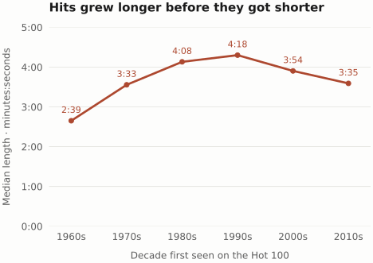
The sound changes are just as uneven. These four Spotify scores run from 0 to 1, but each describes a different characteristic.
{kind=link}
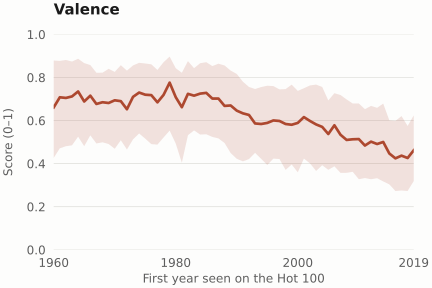
{kind=link}
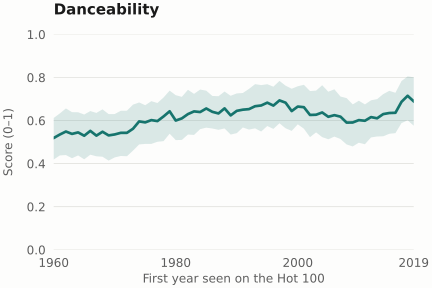
{kind=link}
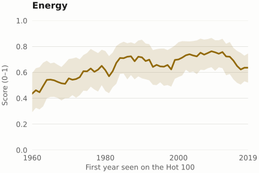
{kind=link}
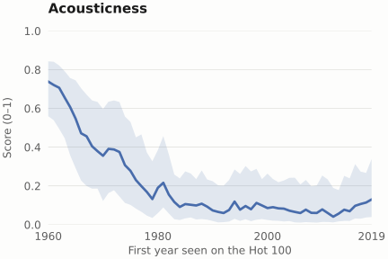
Valence stays near 0.70 through the 1980s, then falls. Danceability is higher in recent decades than in the 1960s. Energy peaks at the decade level in the 2000s, while the largest acousticness decline happens much earlier. These are overall trends, but diving deeper we'll start to see some more interesting stories.
The mix of genres changed, too
The charts above combine many different kinds of music. In our broad genre groups, rock accounts for a larger share of songs in earlier decades, while pop and rap occupy larger shares in the 2010s. That raises a question for the stories below: did the sound change within genres, or did different genres take up more of the chart?
{kind=link}
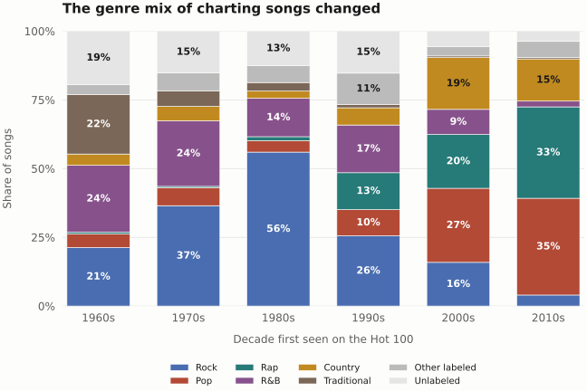
Story 01Lower valence, still danceable
A song can sound less cheerful and still invite you to move. From our data we can see median valence falls from 0.696 in the 1960s to 0.466 in the 2010s, while median danceability rises from 0.538 to 0.641.
But these separate averages can't tell us whether the same songs combine those qualities. In our analysis combining different features, we found an interesting trend by counting recordings that have both a valence score below 0.5 and danceability of at least 0.5.
{kind=link}
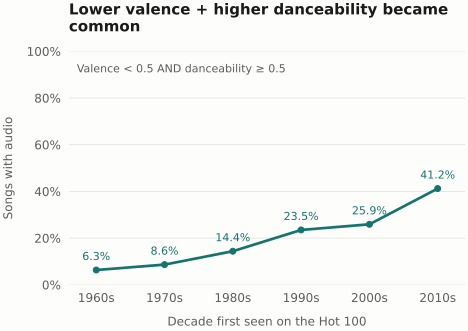
From about 1 in 16 songs to about 2 in 5: less positive-sounding songs with a danceable rhythm on the rise.
The result is not an accident of choosing exactly 0.5. In the notebook, the share rises under all nine combinations of cutoffs at 0.4, 0.5, and 0.6. Giving each performer credit equal weight produces a similar change, as does looking only at songs that reached the top 10.
Less positive-sounding does not mean less energetic
Energy tells a related but different story. The share of recordings with lower valence and higher energy rises from 4.1% in the 1960s to 40.5% in the 2010s. A less cheerful sound can still be intense and active.
{kind=link}
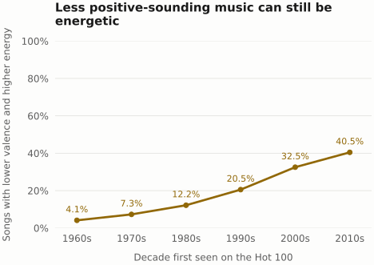
This is the lower-valence, higher-energy category in our mood feature. Its share rises under all nine combinations of valence and energy cutoffs at 0.4, 0.5, and 0.6 as well. Energy is different from danceability: the two charts overlap, but do not count exactly the same songs.
Is that just a change in genre?
Not entirely, under our exploratory genre mapping. Among songs tagged as rap, the joint share rises from 16.5% in the 1990s to 57.1% in the 2010s; pop rises from 26.9% to 36.5%. Country moves in the other direction over that comparison, from 37.5% to 27.4%. The overall trend is not a rule that every genre follows.
What this says about U.S. listeners
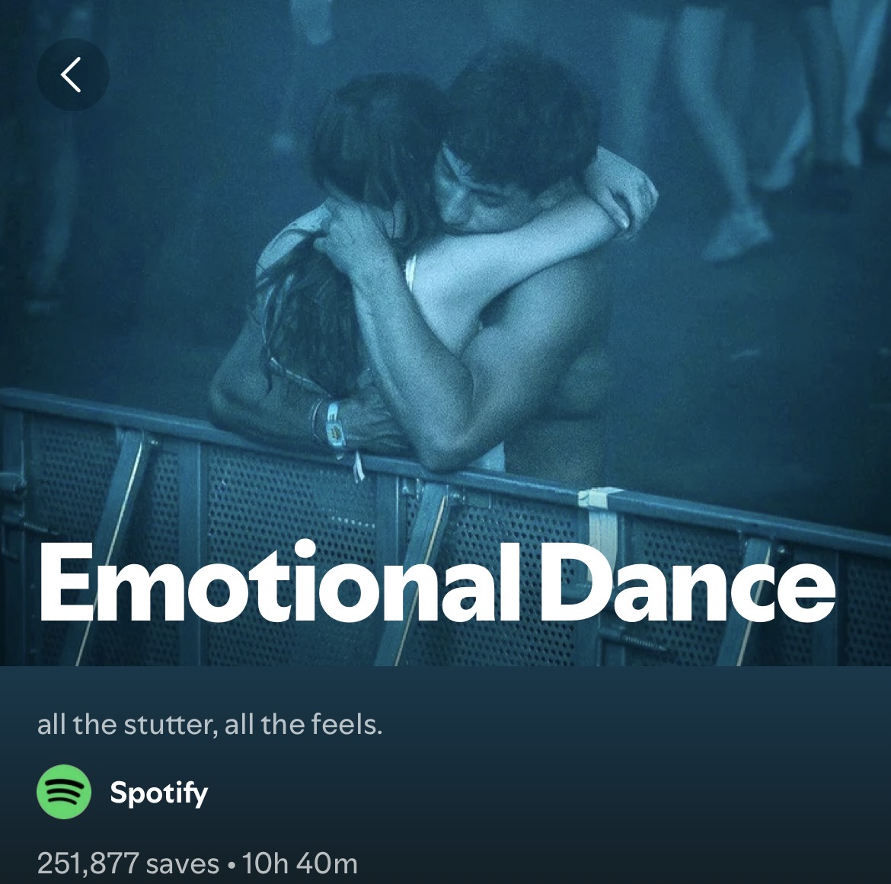
This trend shows an increased popularity in the U.S. of perceived "sadder" songs that are still danceable and/or energetic. Intuitively, danceable or energetic songs might be more associated with being happy or positive sounding, but recent decades have started to flip this association. Perhaps this reflects a change in the psyche and general attitude of U.S. music listeners. What makes a song appealing to a person is complex, but one explanation for this change in preference could be that people are gravitating towards sadder sounding songs they can empathize with while still being able to relieve stress through the song's danceability or powerful energy. Extrapolating further, this could represent an increasingly negative sentiment towards modern day life and its stressful nature. Note: this isn't supported by evidence, it's just speculation that could help explain the trends we're seeing.
Story 02Short songs are making a comeback
“Songs are getting shorter” depends on where the comparison starts. Against the 1990s, yes. Against the 1960s, no. The typical 2010s recording is about 43 seconds shorter than its 1990s counterpart—and about 56 seconds longer than its 1960s counterpart.
{kind=link}
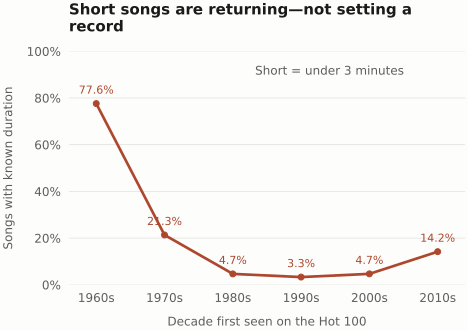
The comeback is visible within the 2010s too. The annual median falls from about 3:45 in 2010 to 3:14 in 2019. Decade summaries soften a change that was still unfolding at the end of our analysis window.
{kind=link}
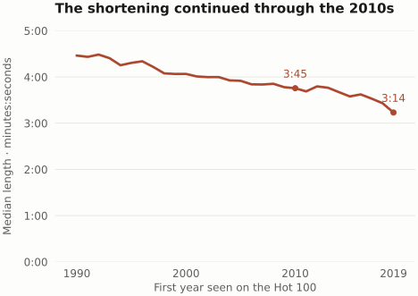
Shorter within genres, too
Pop, rock, rap, and R&B all have shorter median recordings in the 2010s than in the 1990s under our current tags. Country’s change is smaller. A changing genre mix is therefore only part of the description.
| Bucket | 1990s | 2010s | Change |
|---|---|---|---|
| Pop | 4:18 | 3:37 | 42 sec shorter |
| Rock | 4:21 | 3:49 | 32 sec shorter |
| Rap | 4:14 | 3:37 | 37 sec shorter |
| R&B | 4:36 | 3:47 | 49 sec shorter |
| Country | 3:37 | 3:29 | 8 sec shorter |
What happens around our streaming-era boundary?
Our dataset's streaming-era label switches in August 2007 which is when Billboard introduced streaming into chart calculations). Comparing the ten years on each side, the typical recording becomes about 16 seconds shorter, while the share under three minutes rises from 4.3% to 8.0%.
{kind=link}
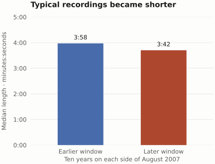
{kind=link}
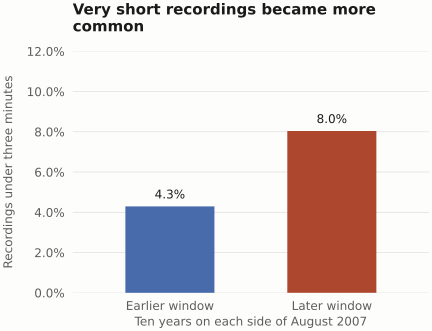
Within these nearby windows, median duration also falls in all five large genre buckets, although the under-three-minute share does not rise in every bucket. The annual trend shows shortening was already underway before the boundary. So, while interesting to see, the comparisons don't isolate an effect caused by streaming.
An expected trend
This is a trend we already expected when starting this project, just based on our own experience seeing short songs becoming more common. Our initial hypothesis about impacts of streaming led us to add the feature to indicate whether a song was released post-streaming era. The data basically confirms our original hypothesis that songs are indeed getting shorter, across all genres. However, our analysis also allowed us to uncover that songs were short in the 60s and 70s as well, before getting longer and then shorter again. We can only speculate why that's the case, but there could be a number of factors, including changing music listening habits and trends in song structure.
Story 03The acoustic shift happened earlier
The largest drop in acousticness was already visible by the 1980s. Its median fell from 0.579 in the 1960s to 0.124 in the 1980s. After that, it changed much less, even edging upward between the 2000s and 2010s.
{kind=link}
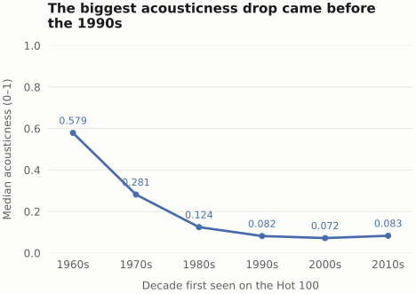
The move toward lower acousticness was largely an earlier chapter—not a change that began with the shortest recent hits.
The broad pattern appears inside genre buckets as well
Pop, rock, and R&B also show large early declines. Country follows a longer downward path, from 0.722 in the 1960s to 0.094 in the 2010s. These comparisons suggest the trend continues within genres as well rather than the broader trend potentially being caused by a shift in genres.
{kind=link}
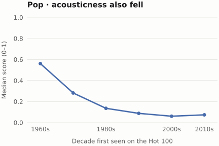
{kind=link}
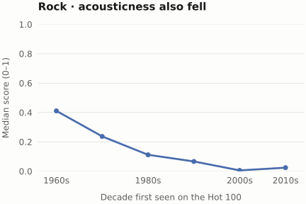
{kind=link}
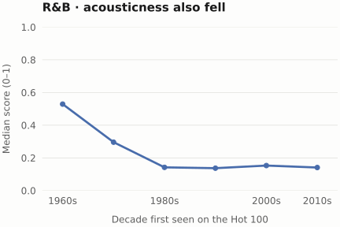
{kind=link}
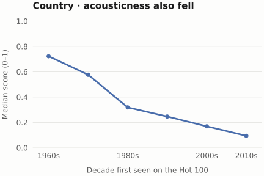
Acousticness and audio technology
The sharp drop in acousticness in the 60s and 70s could be attributed to the advancement of digital audio technology of the time, including the release of the first commercial synthesizer in 1965 and the spread of digital audio systems in the 1970s. As digital audio technology matured and spread, median acousticness dropped even lower to 0.072 in the 2000s before making a slight comeback in the 2010s. If we had data from the 2020s, perhaps we may have seen another small comeback in acoustic song popularity as part of digital minimalism/going analog trends, but this is pure speculation.
What these numbers can—and cannot—tell us
Our charts describe the available matched recordings, not every sound that reached the Hot 100. Of the 27,549 songs in our main period, 4,510 lack the four core audio scores. Earlier decades have larger gaps.
{kind=link}
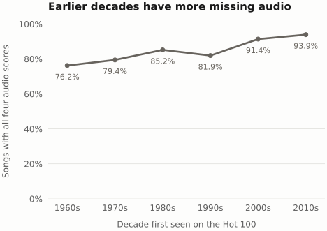
The gaps are uneven. About 41% of songs without genre labels have core audio, compared with about 93% in the pop bucket and 94% in country. Of the songs missing audio, 2,435 still have genre labels. When describing genre composition, we therefore count all songs, including those without audio, rather than let the audio filter reshape the chart population.
Could missing audio affect the overall trends? In our analysis, we tested this by estimated missing scores from observed songs in the same genre and decade, falling back to the decade average for unlabeled or small groups. The mean trends changed very little. They kept their directions even when we shifted those estimates by up to 0.10. These are stated assumptions we used to sanity check the missing data would not skew our main analysis, not proof that the missing songs sound like the observed ones in the same genre decade. None of the figures above uses filled-in audio scores.
Spotify is guessing too. The Spotify algorithmic measures do not tell us whether lyrics are sad, whether listeners feel happy, or whether a song is good. Audio scores like valence and energy come from Spotify's own models, which can have its own flaws.
Data caveats The duration used belongs to the matched Spotify recording, which can differ from the version that charted. Genre tags can be wrong even when the recording appears plausible.
This is a history of charting songs in the US. We give a short-lived chart entry and a long-running hit equal weight. The notebook also checks top-10 songs and chart-appearance weighting; the overall trends for valence, danceability, and acousticness remain. But the data does not separate changes in music from changes in Billboard methodologies to reach the U.S. chart, and they cannot tell us what caused the trends.
The takeaway:
Hit songs indeed became shorter and less acoustic, as we expected coming into this project. However, we uncovered the details behind the trends. Much of acousticness decline came early. Song length recently came down after growing for decades.
The new, unexpected finding was that lower valence became more common, often alongside a danceable rhythm.
We explored a historical story of the charts to see what the broader musical trends were, but music is uniquely human, and its trends can offer us a reflection of society overall. What do you think these trends tell us?